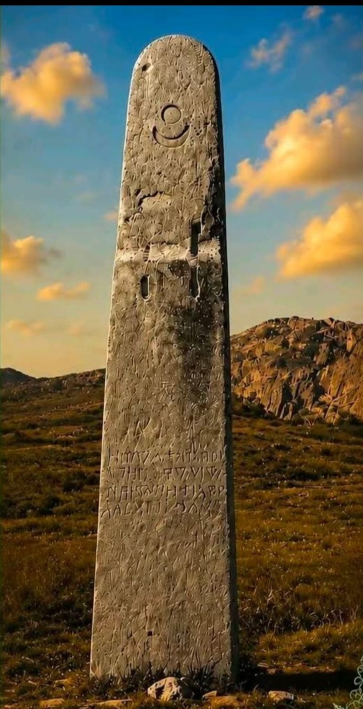
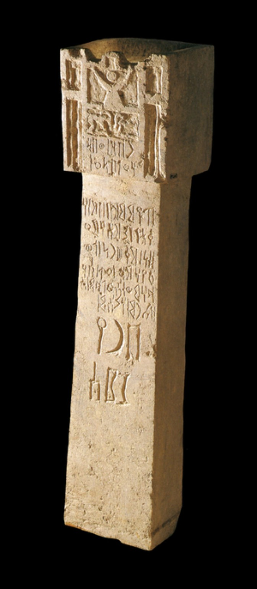
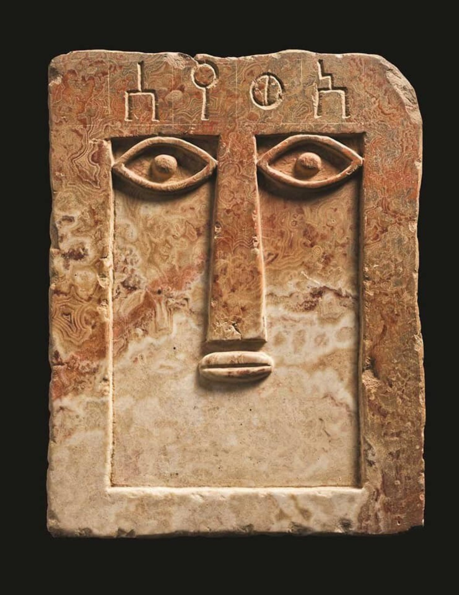

DʿMT: Before Aksum
A careful introduction to the early political world of the northern Horn, what inscriptions establish, and what remains uncertain.
Evidence
Interpretation
A publication and media archive for archaeology, inscriptions, ancient astronomy, historical analysis, and the development of HCM-364: The Horn Celestial Matrix.

Long-form writing designed to separate what the material record directly supports from interpretation and reconstruction.
A careful introduction to the early political world of the northern Horn, what inscriptions establish, and what remains uncertain.

An inscription-first archive using supplied or verified source photographs rather than generated pseudo-script.

Follow the reconstructed 13 Houses × 7 Gates × 4 Elements model with clear evidence-status labeling.
Build the site as a growing reference library rather than a stream of disconnected posts.
Inscriptions, sites, chronology, political questions.
Stelae, inscriptions, coinage, trade, kingship.
Temples, cult evidence, symbols, source texts.
Verified inscriptions, transliteration, translation.
Sun, Moon, Venus, stars, calendars.
13 Houses × 7 Gates × 4 Elements.
Every article and visual is organized around these three levels so readers can see exactly where documentation ends and analysis begins.
Inscriptions, archaeology, historical texts, documented artifacts, and observable astronomy.
Arguments built from the surviving evidence, including areas where specialists may disagree.
Explicitly labeled models, including HCM-364, that go beyond direct attestation and can be tested against evidence.
Authentic supplied inscription and artifact photographs are prioritized over generated imitations throughout the project.


